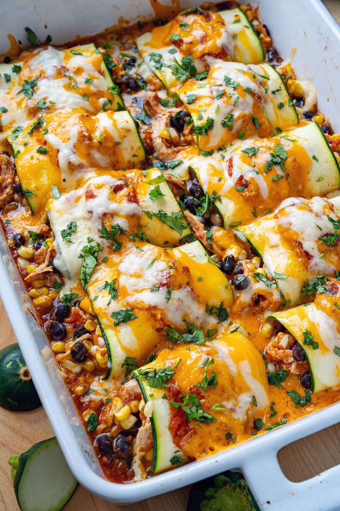

Zucchini Enchilada

Ingrediënten
2 kopjes gekookte kip, in stukjes of blokjes gesneden
1 kop zwarte bonen, uitgelekt en gespoeld
1 kop maïs
2 kopjes enchilada saus
2 pond courgettes, in de lengte dun gesneden
1 kopje cheddarkaas, versnipperd
2 tablespoons cilantro, chopped
Bereiding
Meng de kip, bonen, maïs en 1 kopje van de enchiladasaus
Verdeel 1/2 kopje enchiladasaus over de bodem van een grote ovenschaal.
Leg 2-3 plakken courgette op een werkvlak (genoeg plakken om een 8 tot 10cm brede rol te vormen), een beetje overlappend, en leg er 2-3 eetlepels van de kipvulling op, alvorens op te rollen en in de bakvorm te leggen. Herhaal dit tot alle vulling en courgette is gebruikt, ongeveer 24 rolletjes.
Sprenkel de resterende 1/2 kop enchiladasaus over de bovenkant van de broodjes, gevolgd door de kaas.
Bak in een voorverwarmde 190°C oven tot de kaas gesmolten is en de zijkanten bubbelen, ongeveer 20-25 minuten.
Geniet ervan, gegarneerd met koriander!